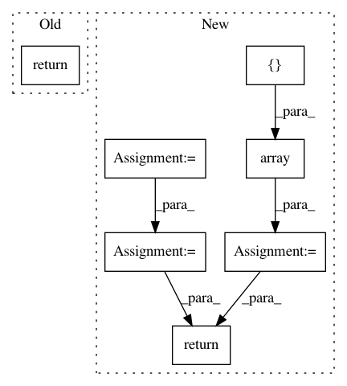

36bda8432b2ed23f623c8c3031b2cba148bec93b,rllib/examples/policy/episode_env_aware_policy.py,EpisodeEnvAwarePolicy,compute_actions_from_input_dict,#EpisodeEnvAwarePolicy#Any#Any#Any#,48
Before Change
self.episode_id = input_dict[SampleBatch.EPS_ID][0]
self.env_id = input_dict["env_id"][0]
// Always return (episodeID, envID)
return [
np.array([self.episode_id, self.env_id]) for _ in input_dict["obs"]
], [], {}
@override(Policy)
def postprocess_trajectory(self,
sample_batch,
After Change
explore=None,
timestep=None,
**kwargs):
ts = input_dict["t"]
print(ts)
// Always return [episodeID, envID] as actions.
actions = np.array([[
input_dict[SampleBatch.AGENT_INDEX][i],
input_dict[SampleBatch.EPS_ID][i], input_dict["env_id"][i]
] for i, _ in enumerate(input_dict["obs"])])
states = [
np.array([[ts[i]] for i in range(len(input_dict["obs"]))])
for _ in range(2)
]
return actions, states, {}
@override(Policy)
def postprocess_trajectory(self,
sample_batch,
In pattern: SUPERPATTERN
Frequency: 3
Non-data size: 7
Instances
Project Name: ray-project/ray
Commit Name: 36bda8432b2ed23f623c8c3031b2cba148bec93b
Time: 2020-10-01
Author: sven@anyscale.io
File Name: rllib/examples/policy/episode_env_aware_policy.py
Class Name: EpisodeEnvAwarePolicy
Method Name: compute_actions_from_input_dict
Project Name: d2l-ai/d2l-zh
Commit Name: 3a770cbc97085c2cd4eaa0a46b2bc037f35389c2
Time: 2017-10-25
Author: muli@cs.cmu.edu
File Name: utils.py
Class Name:
Method Name: evaluate_accuracy
Project Name: NervanaSystems/coach
Commit Name: 19ad2d60a7022bb5125855c029f27d86aaa46d64
Time: 2019-07-14
Author: gal.leibovich@intel.com
File Name: rl_coach/filters/reward/reward_normalization_filter.py
Class Name: RewardNormalizationFilter
Method Name: filter